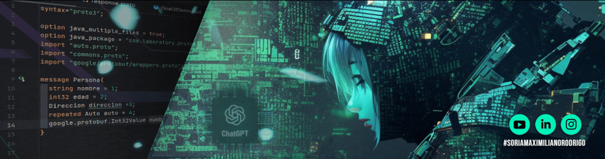

Pipeline RAG sobre corpus propio con evaluación automatizada (RAGAS): faithfulness, relevancia y context precision/recall.
Ingesta, chunking, embeddings, retrieval y generación.
Métricas y reportes reproducibles del pipeline.
CLI idempotente para indexar el corpus.
Suite offline con LLM y embeddings mockeados.